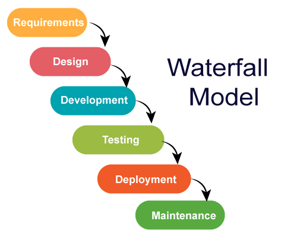

Day-01: Software Testing Fundamentals
What is Software Testing?
Software testing is a process of investigation to find bugs/defects/issues and report to minimize defects to develop a quality software.
Why software testing is so important?
Because without it quality of software product development is not possible!
How a software is developed?
A software is developed in a series of process. The process is called SDLC.
What is SDLC?
SDLC stands for Software Development Life Cycle. It does have 8 phases:
- Planning & requirements gathering
- Designing
- Implementation
- Testing
- Deployment
- Maintenance
Manual Testing| Day-02
Why software quality fails?
Types of IT companies?
There are two types of IT Companies:
- Project-based/ Service-based: TCS, Infosys, Accenture etc
- Product-based: Google, Microsoft, IBM etc
What is SDLC?
SDLC stands for Software Development Life Cycle. It is a process used by the software industry to design, develop and test high quality software applications.
Software Development Models
- Waterfall Model
- Agile-scrum Model
- V Model
Waterfall Model
- Waterfall model is sequential model and invented in 1970!
- Has to be completed development stage to start testing phase
- 100% has to be completed to go to next stage
- Cannot entertain new requirements once a phase started
Advantages & disadvantages in Waterfall Model: It does have both advantages & disadvantages
Advantages:
- Quality of the product will be good
- Less number of bugs
- Initial investment is low
- Preferred for small projects
Disadvantages:
- Client cannot change the requirements
- Any defect in the requirements will carry forward to all the stages
- Testing will start only after the development
- Final software will be ready after the final stage of the waterfall model
- Cannot apply for large projects